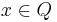
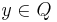
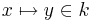
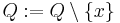

Anatomy of a Machine (Rodin User Manual)
From Event-B
|
Once a machine is created, a window such as the following appears in the editing area:
You are in the "Edit" page allowing you to edit elements of the machine, namely dependencies (keywords "REFINES" and "SEES"), variables (keyword "VARIABLES"), invariants (keyword "INVARIANTS), theorems (keyword "THEOREMS"), variants (keyword "VARIANTS"), or events (Keywords "EVENTS"). These modelling elements can be edited in a way that is similar to what has been explained for contexts in section 2, it is not repeated here.
It is also possible to do so in a different way as explained in sections 3.1 to 3.6. The creation of these elements, except dependencies can be made by two distinct methods, either by using wizards or by editing them directly. In each section, we shall review both methods. NOTE: The hurried reader can skip these sections and go directly to section 3.7
Dependencies
The "Dependencies" window is shown automatically after creating a machine (you can also get it by selecting the "Dependencies" tab). This was shown in the previous section so that we do not copy the screen shot again. As can be seen on this window, two kinds of dependencies can be established: machine dependency in the upper part and context dependencies in the lower part.
In this section, we only speak of context dependencies (machine dependency will be covered in section 3.8). It corresponds to the "sees" relationship alluded in section 1. In the lower editing area, you can select some contexts "seen" by the current machine.
Variables
Variables Creation Wizard
In order to activate the variables creation wizard, you have to press the corresponding button in the toolbar as indicated below:

After pressing that button, the following wizard pops up:
You can then enter the names of the variables, its initialization, and an invariant which can be used to define its type. By pressing button "More Inv." you can enter additional invariants. For adding more variables, press the "Add" button. When you’re finished, press the "OK" button.
Direct Editing of Variables
It is also possible to create (button "Add") or remove (button "Delete") variables by using the central editing window. For this, you have first to select the "Variables" tab of the editor. You can also change the relative place of a variable: first select it and then press button "Up" or "Down".
Invariants
Invariants Creation Wizard
In order to activate the invariants creation wizard, you have to press the corresponding button:
After pressing that button, the following wizard pops up:
You can then enter the invariants you want. If more invariants are needed then press "More".
Direct Editing of Invariants
It is also possible to create (button "Add") or remove (button "Delete") invariants by using the central editing window. For this, you have first to select the "Invariants" tab of the editor. You can also change the relative place of an invariant: first select it and then press button "Up" or "Down".
Theorems
Theorems Creation Wizard
In order to activate the theorems creation wizard, you have to press the corresponding button:
After pressing that button, the following wizard pops up:
You can then enter the theorems you want. If more theorems are needed then press "More". When you are finished, press the "OK" button.
Direct Editing of Theorems
It is also possible to create (button "Add") or remove (button "Delete") theorems by using the central editing window. For this, you have first to select the "Theorems" tab of the editor. You can also change the relative place of a theorem: first select it and then press button "Up" or "Down".

Events
Events Creation Wizard
In order to activate the events creation wizard, you have to press the corresponding button in the toolbar as indicated below:
After pressing that button, the following wizard pops up:
You can then enter the events you want. As indicated, the following elements can be entered: name, parameters, guards, and actions. More parameters, guards and actions can be entered by pressing the corresponding buttons. If more events are needed then press "Add". Press "OK" when you’re finished.
Note that an event with no guard is considered to have a true guard. Moreover, an event with no action is considered to have the "skip" action.
Direct Editing of Events
It is also possible to perform a direct creation (button "Add Event") of variables by using the central editing window. For this, you have first to select the "Events" tab of the editor. You can also change the relative place of a variable: first select it and then press button "Up" or "Down".
Once an event is selected you can add parameters, guards, and actions. The components of an events can be seen by pressing the little triangle situated on the left of the event name:
As can be seen, event rmv_1 is made of two parameters, x and y, three guards, , , and , and one action . These elements can be modified (select and edit) or removed (select, right click on the mouse, and press "Delete"). Similar elements can be added by pressing the relevant buttons on the right of the window.
Adding Comments
It is possible to add comments to variables, invariants, theorems, events, guards, and actions. For doing so, select the corresponding modeling element and enter the "Properties" window as indicated below where it is shown how one can add comments on a certain guard:
Multiline comments can be added in the editing area labeled "Comments".
Pretty Print
The pretty print of a machine looks like an input file. It is produced as an output of the editing process:
Dependencies: Refining a Machine
A machine can be refined by other ones. This can be done directly by selecting the machine to be refined in the "Project Explorer" window. A right click on the mouse yields the following contextual menu:
You then press button "Refine". A wizard will ask you to enter the name of the refined machine. The abstract machine is entirely copied in the refined machine: this is very convenient as, quite often, the refined machine has lots of elements in common with its abstraction.
Adding more Dependencies
Abstract Event
The absraction of an event is denoted by a "Refine Event" element. Most of the time the concrete and abstract events bear the same name. But, it is always possible to change the name of a concrete event or the name of its abstraction. If you want to specify the abstraction of an event, first select the "Event" tab of the editor and right click on the event name. The following contextual menu will pop up:
You have then to choose the "New Refine Event" option. The abstract event can then be entered by adding the name of the abstract event: here rmv_1.
TODO: Explain what proof obligation is generated
Splitting an Event
An abstract event can be split into two or more concrete events by just saying that these events refine the former (as explained in previous section).
Merging Events
Two or more abstract events can be merged into a single concrete event by saying that the latter refines all the former. This is done by using several times the approach explained in the previous case. The constraints is that the abstract events to be merged must have exactly the same actions (including the labels of these actions). A proof obligation is generated which states that the guard of the concrete event implies the disjunction of the guards of the abstract events
Witnesses
When an abstract event contains some parameters, the refinement proof obligation involves proving an existentially quantified statement. In order to simplify the proof, the user is required to give witnesses for those abstract parameters which are not present in the refinement (those appearing in the refinement are implicitly taken as witnesses for their corresponding abstract counterparts). Here is an example of an abstract event (left) and its refinement (right):
The parameter x, being common to both the abstraction and the refinement, does not require a witness, whereas one is needed for abstract parameter y. In order to define the witness, one has first to select the "Events" tab of the editor for the concrete machine where the concrete event (here rmv_1) is selected. After a right click, a menu appears in the window as indicated:
You press button "New Witness" and then you enter the parameter name (here y) and a predicate involving y (here y = b) as indicated below
Most of the time, the predicate is an equality as in the previous example, meaning that the parameter is defined in a deterministic way. But it can also be any predicate, in which case the parameter is defined in a non-deterministic way.
Variant
New events can be defined in a concrete machine. Such events have no abstract counterparts. They must refine the implicit "empty" abstract event which does nothing.
Some of the new events can be selected to decrease a variant so that they do not take control for ever. Such events are said to be CONVERGENT. In order to make a new event CONVERGENT, select it in the "Events" tab and open the "Properties" window. You can edit the "conv." area. There are three options: ORDINARY (the default), CONVERGENT, or ANTICIPATED. The latter corresponds to a new event which is not yet declared to be CONVERGENT but will be in a subsequent refinement.
In order to define the variant, use the variant wizard as shown below:
After pressing that button, the following wizard will pop up
You can enter the variant and then press "OK". The variant is either a natural number expression or a finite set expression.